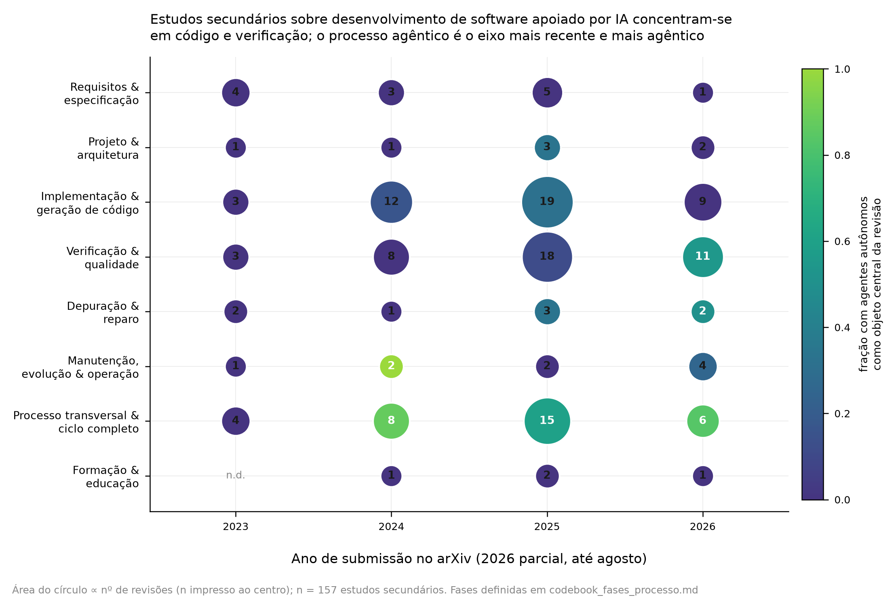
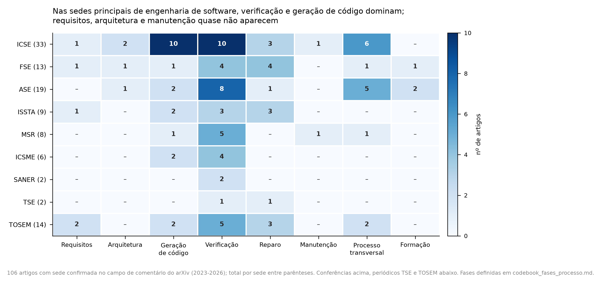

O programa está sendo construído encontro por encontro. Quando este for definido, aparecem aqui o roteiro das três horas, a leitura obrigatória, a atividade prática e a entrega.
O que se estuda em cada encontro, na ordem em que acontece. Cada aula tem página própria com roteiro, leitura obrigatória e entrega.
Estado do programa
Por ora, apenas o primeiro encontro está fechado; os demais aparecem como a definir e serão publicados aqui à medida que o semestre avança. Já está fixado, porém, que o último encontro de cada mês é apresentação de trabalho e debate — 27 ago, 24 set, 29 out, 26 nov e 3 dez.
Nada aqui é exercício genérico. Os laboratórios e os artigos devem tratar do tema do trabalho de pesquisa do aluno — a dissertação, o projeto ou a linha de investigação que você já conduz.
Um objeto de estudo, do primeiro laboratório ao artigo final.
Encontro 02
Você declara o tema da sua pesquisa e o artefato de software que vai usar como campo: repositório, dataset, protótipo ou ferramenta.
Laboratórios 1 a 4
Cada prática aplica a técnica da unidade a esse mesmo objeto e é apresentada no último encontro do mês, seguida de debate com a turma.
Artigo final
O artigo consolida os quatro laboratórios em um estudo submetível, alinhado à sua dissertação.
Composição da nota
20%
Apresentações e debate
No último encontro de cada mês cada dupla apresenta o andamento do seu trabalho e argui o dos colegas. Conta a apresentação e a qualidade da arguição.
30%
Laboratórios
Quatro práticas, todas sobre o tema da sua pesquisa, entregues como repositório executável.
50%
Artigo final
Estudo experimental de oito páginas no formato SBC, derivado da sua questão de pesquisa, com dados e código abertos.
Modelo de fichamento
Uma página por artigo, nesta estrutura. O comentário final é a parte que mais pesa: é onde o artigo encontra a sua pesquisa.
{{ fi.campo }}
{{ fi.texto }}
Modelo em LaTeX
Mesma estrutura, pronta para compilar com pdflatex. Baixe o arquivo ou copie o preâmbulo abaixo.
\documentclass[11pt,a4paper]{article}
\usepackage[utf8]{inputenc}
\usepackage[T1]{fontenc}
\usepackage[brazil]{babel}
\usepackage[margin=2.5cm]{geometry}
\usepackage{hyperref}
\usepackage{titlesec}
\usepackage{parskip}
\usepackage{csquotes}
\hypersetup{colorlinks=true, urlcolor=black, linkcolor=black}
\titleformat{\section}{\bfseries\large}{}{0pt}{}
\titlespacing*{\section}{0pt}{12pt}{2pt}
\pagestyle{empty}
\newcommand{\aluno}{Nome do aluno}
\begin{document}
{\Large\bfseries Fichamento}\\[2pt]
{\small \aluno{} \quad·\quad \today}
\hrule\vspace{6pt}
\section*{Referência}
Autor, título, ano e link.
\section*{Tema}
Assunto principal do texto.
\section*{Objetivo}
O que o autor pretende discutir ou demonstrar.
\section*{Resumo}
Síntese das principais ideias, com suas próprias palavras.
\section*{Citação importante}
\begin{quote}
\enquote{Trecho relevante do texto.} (p.~XX)
\end{quote}
\section*{Comentário}
Sua avaliação sobre o texto e como ele pode ser útil para sua pesquisa.
\end{document}
Os quatro laboratórios
O enunciado é o mesmo para a turma; o campo de aplicação é o seu. Se o seu tema não é engenharia de software, o objeto passa a ser o software que a sua pesquisa produz ou consome.
{{ l.n }}
{{ l.prazo }}
{{ l.titulo }}
{{ l.descricao }}
No seu tema: {{ l.noSeuTema }}
Artigo final
Oito páginas, formato SBC, escrito em dupla ou individualmente. A pergunta do artigo tem de sair da sua pesquisa: o que o uso de IA no desenvolvimento muda no problema que você já estuda.
Critério
Peso
O que se espera
{{ r.criterio }}
{{ r.peso }}
{{ r.espera }}
Aderência ao tema. Entrega que não se liga à sua pesquisa é devolvida para refazer — não vale nota parcial.
Reprodutibilidade. Toda entrega inclui repositório com seed, versão do modelo e instruções de execução.
Uso de IA. Encorajado e obrigatoriamente declarado: ferramenta, versão, o que foi gerado e como foi verificado.
Atrasos. Desconto de 10% por dia corrido; após cinco dias a entrega não é aceita.
Definição operacional dos onze códigos de fase usados para classificar os dois corpora do projeto: 171 estudos secundários e 129 artigos com sede de publicação confirmada. Cada código traz escopo, critérios de inclusão e exclusão, um teste de decisão de uma pergunta e exemplos reais retirados dos corpora.
O esquema começa antes do requisito, em F9, percorre a ordem canônica do ciclo de vida de F1 a F6, acrescenta duas fases de sustentação que atravessam o ciclo sem se dissolver nele — F10 para a coordenação do trabalho e F11 para o conhecimento do projeto — e fecha com F7 para o que é genuinamente transversal e F8 para formação. Um artigo recebe exatamente um código, o da fase predominante; quando cobre várias fases de forma genuína, vai para F7 — e é justamente isso que F7 significa.
Três códigos foram acrescentados na revisão mais recente. F9 separa o entendimento do problema do seu registro formal, antes ambos em F1. F10 extrai de F7 a coordenação operacional do trabalho. F11 extrai de F3 e de F7 o conhecimento do projeto tratado como artefato mantido.
A tabela também é um resultado, não só uma legenda. Verificação e qualidade concentra 50 estudos secundários e 32 artigos primários, e processo transversal vem logo atrás com 48 e 28. As três fases acrescentadas nesta revisão somam 9 estudos secundários e 18 artigos primários entre 300 obras classificadas — números que só apareceram depois de duas rodadas de varredura dedicada. Antes delas somavam 3 e 6, e a conclusão precipitada de que a lacuna era real precisou ser revista duas vezes.
Aplicação dos códigos aos dois corpora: onde o campo já se revisou, que tipo de síntese produz, o que acumulou impacto e o que ainda não foi feito.
Versão dos dados
As tabelas, figuras e o corpus navegável desta página refletem o recorte anterior — 157 estudos secundários e 106 artigos em sedes, sob o esquema de oito fases. O codebook já foi revisado para onze fases, 171 e 129; esta parte será atualizada quando os novos CSV forem publicados.
Mapeamento sistemático · arXiv · jan 2023 a ago 2026
Onde o campo já se revisou
O objeto não são as técnicas primárias, e sim a literatura de segunda ordem que já tentou organizar o campo: quem revisou o quê, com que protocolo, e onde a síntese ainda não chegou. Setenta e quatro consultas ao arXiv produziram 1.172 registros únicos; o filtro de segunda ordem e a triagem manual deixaram 157 estudos secundários, cada um com rótulo de fase, tipo de estudo e grau de foco em Agentic.
Métricas de citação vindas do OpenAlex, casadas por similaridade de título ≥ 0,85. Apenas 45 dos 157 têm registro casado e 18 têm FWCI — preprints recentes raramente têm referências indexadas. As citações servem para separar clássicos consolidados de trabalhos sem rastro bibliométrico, não para ranquear qualidade.

Área do círculo ∝ número de revisões; cor indica a fração com agentes autônomos como objeto central. n = 157.
Fase do processo
2023
2024
2025
2026
Total
{{ d.fase }}
{{ d.a23 }}
{{ d.a24 }}
{{ d.a25 }}
{{ d.a26 }}
{{ d.total }}
A distribuição é fortemente desequilibrada. Implementação e verificação juntas concentram 83 dos 157 estudos, mais da metade do corpus, enquanto requisitos tem 13, arquitetura 7, manutenção 9 e formação 4. Reproduz-se na literatura de segunda ordem o mesmo viés dos estudos primários: a atividade que o modelo executa bem e cujo resultado é fácil de medir com um benchmark é também a que mais atrai revisões.
Quanto de Agentic há em cada fase
Fase do processo
Agentic como objeto central
Agentic como seção
Sem foco em Agentic
{{ d.fase }}
{{ d.central }}
{{ d.secao }}
{{ d.sem }}
Vinte e um dos 33 estudos de processo transversal têm agentes autônomos como objeto central, contra 8 em implementação e 8 em verificação. Quando a revisão sobe da tarefa para o processo, ela necessariamente encontra Agentic: é no nível do processo que a autonomia se manifesta como escolha da próxima ação, e não como qualidade de um trecho gerado.
Que tipo de síntese está sendo produzida
Tipo de estudo secundário
2023
2024
2025
2026
Total
{{ t.tipo }}
{{ t.a23 }}
{{ t.a24 }}
{{ t.a25 }}
{{ t.a26 }}
{{ t.total }}
Metade do corpus são surveys narrativos. Revisões com protocolo explícito somam 60, e a proporção melhorou: 7 de 18 em 2023, 14 de 36 em 2026. O aparecimento de 15 estudos que combinam revisão da literatura com dados primários de praticantes é o sinal metodológico mais interessante do período — é a única linha que confronta a literatura com o que equipes de fato fazem. Há exatamente um estudo terciário e três taxonomias: para um campo com 157 revisões em quatro anos, é pouco.
Os três trabalhos do topo são de 2023 e definiram o vocabulário que os demais usam: a revisão sistemática que organiza a literatura por tarefa, o survey que fez o mesmo recorte para teste, e o survey que percorre o espectro completo de atividades — o mais próximo de uma visão de processo entre os fundadores, cuja tese central é que técnicas híbridas são indispensáveis para filtrar soluções incorretas. Da safra de 2024 em diante nenhuma revisão passou de 110 citações, e as revisões agênticas de 2025–2026 estão quase todas abaixo de dez: parte é atraso de indexação, parte é real — o campo agêntico ainda não elegeu sua revisão canônica.
A fronteira agêntica: 43 revisões com agentes como objeto central, 32 delas de 2025 em diante
Três padrões atravessam essa camada. O primeiro é o deslocamento do benchmark de tarefa isolada para o benchmark de trajetória, que avalia o caminho percorrido pelo agente e não só o artefato final. O segundo é o tratamento de memória e contexto como componentes de primeira classe do processo. O terceiro é a emergência da verificação como gargalo declarado: várias revisões de 2026 apontam que a produção de código por agentes ultrapassou a capacidade humana de revisá-lo.
Onde o trabalho primário está sendo publicado

106 artigos com sede confirmada no campo de comentário do arXiv (2023–2026); total por sede entre parênteses. Conferências acima, periódicos TSE e TOSEM abaixo.
Nas sedes principais, verificação e geração de código dominam; requisitos, arquitetura e manutenção quase não aparecem. ICSE concentra 33 artigos, com 10 em geração de código e 10 em verificação; ASE puxa para verificação (8) e processo transversal (5).
Corpus completo · navegável
Os dois corpora, artigo por artigo
Escolha o corpus e a fase. Cada registro traz autor, ano, foco declarado e o link para o arXiv.
Mostrando {{ corpusMostrando }} de {{ corpusTotal }}
Triagem automática sobre título e resumo, seguida de segunda passada obrigatória sobre tudo o que foi atribuído a F9, F10 e F11 e sobre os casos de baixa confiança, com justificativa escrita. Cada linha dos CSV carrega fase, confiança e justificativa, o que permite refazer a auditoria sem repetir a classificação.
A verificação das fases com contagem baixa teve três etapas e a conclusão mudou duas vezes. A triagem lexical reversa sobre o material já recuperado detecta rótulo errado, mas não falha de recuperação — e levou à conclusão precipitada de que as lacunas eram reais. A varredura dedicada ao arXiv, com 27 consultas no vocabulário próprio de F9, F10 e F11, recuperou 355 registros novos, dos quais 23 com sede confirmada. A terceira etapa estendeu a varredura ao nível secundário. Saldo: o corpus de sedes passou de 106 para 129 artigos e o de secundários de 157 para 171.
A lição metodológica. Uma lacuna medida com o vocabulário errado é lacuna de busca, não de campo. Contagem baixa em qualquer código deste esquema é hipótese a testar com consultas dedicadas, nunca resultado. Casos de fronteira remanescentes devem ser verificados antes de citar as contagens em publicação.
Tópico Especial em Inteligência Artificial · Mestrado em Computação Aplicada · IFES Serra · 2026.2
Desenvolvimento de Software Suportado por IA
Como modelos de linguagem e agentes autônomos estão reescrevendo o ciclo de vida do software — e como avaliar isso com rigor empírico. Um semestre entre leitura de artigos, experimentação com ferramentas e um estudo próprio publicável.
Fundamentos de modelos de linguagem aplicados a código: tokenização, contexto, geração e limites. Engenharia de prompt e de contexto para tarefas de programação. Assistentes de codificação e o efeito medido sobre produtividade e qualidade.
Desenvolvimento orientado a especificação (SDD). Agentes de engenharia de software: arquiteturas, ferramentas, execução em repositórios reais e benchmarks (SWE-bench e sucessores). Agentes evolutivos e auto-aperfeiçoáveis.
Teste, revisão, verificação e segurança de código gerado por IA. Método experimental para avaliar assistentes e agentes. Licenciamento, proveniência e ética.
Ao final, você deve
01Explicar o que um LLM pode e não pode garantir em tarefas de engenharia de software.
02Projetar e executar um agente de software sobre um repositório real, com ferramentas e critério de parada.
03Avaliar assistentes e agentes com métricas defensáveis, além do pass@k.
04Redigir um artigo curto, no formato SBC/IEEE, com um experimento reprodutível.
Material da Aula 01 · Codebook
As oito fases do processo de software
O mapa que organiza a disciplina: oito códigos que classificam a literatura de engenharia de software com IA, com escopo, teste de decisão e as contagens de 157 estudos secundários e 106 artigos em sedes revisadas por pares.
Cada encontro tem página própria. Por ora só o primeiro está fechado; o último encontro de cada mês é sempre apresentação de trabalho e debate.
Bibliografia
Artigos
Todos vêm do corpus mapeado na Aula 01. Em vermelho, o núcleo já consolidado por citação; em contorno, a fronteira Agentic de 2025–2026. Todos no arXiv, de acesso aberto.